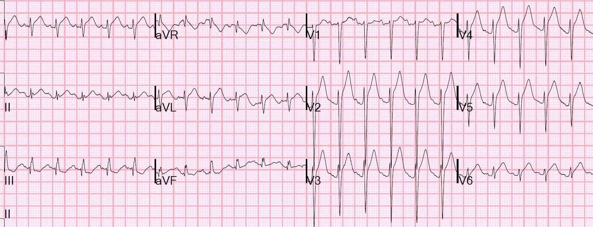
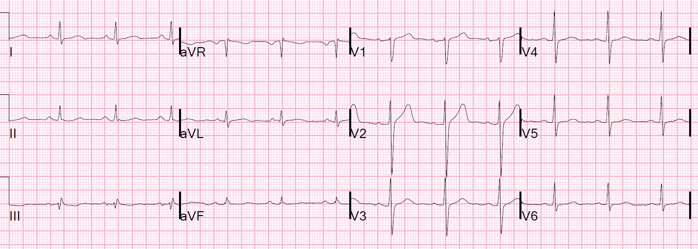
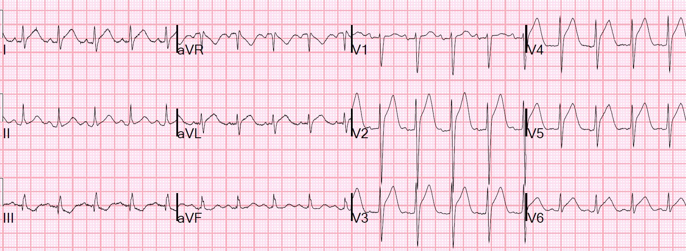
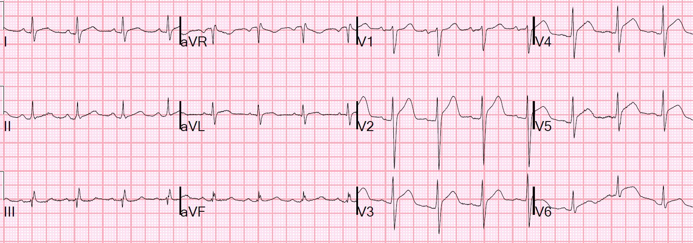
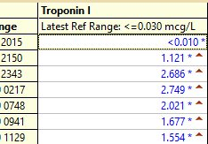
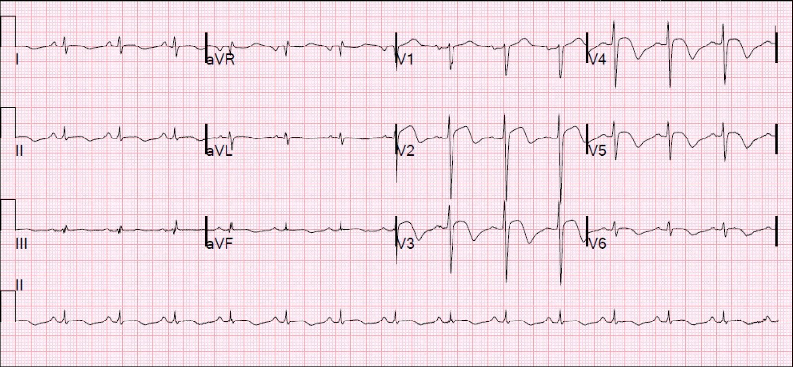
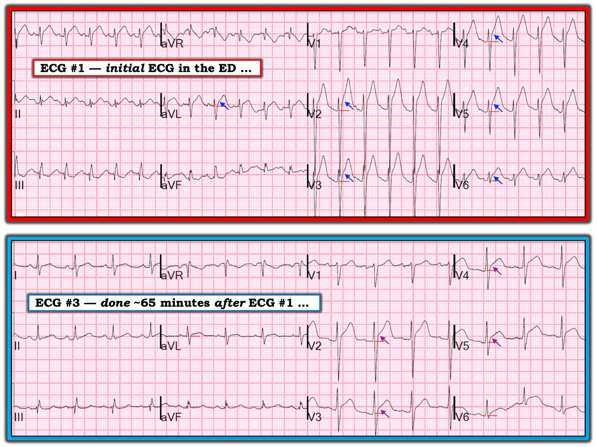

15/04/2019 — Nhịp nhanh, sốt tới 105 và ST chênh lên do thiếu máu cục bộ — một Cây cầu Quá xa
Bản dịch tiếng Việt của bài "Tachycardia, fever to 105, and ischemic ST Elevation — a Bridge too Far" – Dr. Smith’s ECG Blog. Giữ nguyên toàn bộ 9 hình ảnh và 1 video của bản gốc.
Một người đàn ông gần 60 tuổi gọi 911 vì sốt và khó thở (SOB) ngày càng nặng. Một điện tâm đồ trước viện đã được ghi (không được trình bày ở đây và tôi không được xem), và bản ghi này đáng lo ngại cho STEMI.
Bệnh nhân đến viện với nhịp tim rất nhanh và sốt rất cao.
Đây là điện tâm đồ ban đầu của bệnh nhân tại khoa cấp cứu (ED):


Có ST chênh lên rất rõ ở tất cả các chuyển đạo trước tim, cũng như ở I và aVL.
QTc là 374, và giá trị công thức khá cao, phù hợp với tắc LAD.
Một điện tâm đồ trước đó 4 năm là bình thường:


Bản ghi này trông giống STEMI thành trước, nhưng bị phức tạp hóa bởi nhịp nhanh (có thể làm đoạn ST chênh lên rất nhiều) và bởi bệnh cảnh lâm sàng là sốt và nhiễm khuẩn huyết.
Nếu bệnh nhân đến với đau ngực và tần số tim bình thường, hoặc với ngừng tim có nhịp sốc được, thì ST chênh lên có dáng vẻ thiếu máu cục bộ là STEMI cho đến khi chứng minh được điều ngược lại.
Nhưng khi bệnh cảnh lâm sàng là nhiễm khuẩn huyết, cần cân nhắc khả năng ST chênh lên là do thiếu máu cục bộ do tăng nhu cầu (demand ischemia), hoặc do một quá trình nào khác, và bị nhịp nhanh làm nặng thêm.
Thận trọng nhất là điều trị các tình trạng khác, kiểm soát tần số tim, rồi ghi lại điện tâm đồ.
Ca bệnh tiếp diễn
Siêu âm tim tại giường đã được thực hiện:
IMG_1678 từ Stephen Smith trên Vimeo.
Mặc dù chất lượng chưa tối ưu, theo tôi nó cho thấy tim tăng động và có thể có rối loạn vận động thành vùng mỏm.
Ca bệnh tiếp diễn
Bệnh nhân được điều trị nhiễm khuẩn huyết và được ghi một điện tâm đồ khác 35 phút sau đó:


QTc = 410 ms
Vẫn còn ST chênh lên (STE) đáng sợ
Công thức vẫn dương tính
Bệnh nhân tiếp tục cải thiện và được ghi một điện tâm đồ khác ở phút thứ 65:


Bản ghi trông tốt hơn nhiều, dù công thức vẫn dương tính ở mức ranh giới:
STE tại 60 ms sau điểm J ở V3 (STE60V3) = 3.5
Biên độ sóng R ở V4 (RAV4) = 10
Tổng biên độ QRS ở V2 = 26
Giá trị công thức = 18.9
Bất kỳ giá trị nào lớn hơn 18.2 đều nên được coi là tắc LAD cho đến khi chứng minh được điều ngược lại.
Một ca khó.
Khoa tim mạch được mời hội chẩn và họ không cho rằng có chỉ định kích hoạt phòng thông tim cấp cứu.
Bệnh nhân được nhập viện và troponin được đo nhiều lần liên tiếp:


Vì troponin tăng, siêu âm tim được thực hiện vào ngày hôm sau:
Phân suất tống máu thất trái ước tính là 50%.
Áp lực tâm thu động mạch phổi ước tính là 37 mmHg + áp lực nhĩ phải (RA).
Phân suất tống máu thất trái ước tính bình thường, ở giới hạn dưới của bình thường.
Rối loạn vận động thành khu trú — phần xa vách liên thất, thành trước và mỏm vô động
Đây là một điện tâm đồ ghi lại:


Bác sĩ nội trú hỏi tôi nghĩ gì về ca này sau khi sự việc đã xảy ra nhưng trước khi chụp mạch vành.
Tôi nói rằng tôi nghĩ có một chỗ hẹp cố định ở LAD, và nhịp nhanh cùng stress đã gây ra một STEMI típ 2.
Trong bản tóm tắt này từ năm 2011, chúng tôi nhận thấy 4% (4 trên 99) nhồi máu cơ tim típ 2 và 38% nhồi máu cơ tim típ 1 có ST chênh lên.
https://www.annemergmed.com/article/S0196-0644(11)00829-8/fulltext (bản tóm tắt trên Annals of Emergency Medicine, toàn văn)
Đã chụp mạch vành:
Kết quả không cho thấy tổn thương thủ phạm và không có bệnh mạch vành, nhưng có một cầu cơ tim (myocardial bridge) ở LAD đoạn giữa.
Một bài tổng quan xuất sắc về cầu cơ tim (myocardial bridging), có toàn văn:
https://academic.oup.com/eurheartj/article/26/12/1159/524878 (bài tổng quan về cầu cơ tim trên European Heart Journal)
Cầu cơ tim là khi động mạch vành, thường là LAD, chui vào trong cơ tim.
Đây là một đoạn trích từ bài báo:
“Bình thường, chỉ 15% lưu lượng máu mạch vành diễn ra trong thì tâm thu, và vì cầu cơ tim là một hiện tượng tâm thu trên phim chụp mạch, ý nghĩa và tầm quan trọng lâm sàng của nó đã bị đặt dấu hỏi. Sự hiện diện của nhịp nhanh có thể làm lộ ra tác động gây thiếu máu cục bộ của cầu cơ tim do rút ngắn thời kỳ tâm trương và làm tăng tầm quan trọng của dòng máu tâm thu. Ngoài ra, nhịp nhanh có thể làm thiếu máu cục bộ nặng thêm do giảm thời gian đổ đầy tâm trương và giảm dự trữ lưu lượng vành (một thước đo khả năng tăng lưu lượng máu mạch vành khi bị stress). Theo một giả thuyết, sự gập góc của mạch máu trong thì tâm thu có thể gây sang chấn lớp áo trong và tổn thương nội mô, đặc biệt ở tần số tim cao. Đến lượt mình, điều này có thể gây kết tập tiểu cầu và co thắt mạch, dẫn đến hội chứng vành cấp.”
Tóm tắt cơ chế bệnh sinh của ca này và các điện tâm đồ:
Đây là một STEMI típ 2 vùng LAD. Nói cách khác, đã có thiếu máu cục bộ xuyên thành trong lúc nhịp nhanh, do cả tăng nhu cầu (tần số tim cao) lẫn tác động của cầu cơ tim, vốn sẽ bắt chước tình trạng gần tắc. Rồi khi tần số tim giảm xuống, nhu cầu giảm và tưới máu được phục hồi hoàn toàn, giống như trong hội chứng Wellens. Vì vậy các dấu hiệu trên điện tâm đồ giống như khi bệnh nhân bị STEMI thành trước có tái tưới máu. Do đó có rối loạn vận động thành ở vùng phân bố của LAD (không phải loạn động toàn bộ vùng mỏm như trong Takotsubo). Rối loạn vận động thành này gần như chắc chắn sẽ hồi phục theo thời gian (choáng cơ tim).
Bệnh cơ tim do stress Takotsubo cũng là một khả năng, nhưng siêu âm tim không có hình ảnh giảm động toàn bộ vùng mỏm điển hình, và điện tâm đồ, đặc biệt là điện tâm đồ tái tưới máu, phù hợp hơn với thiếu máu cục bộ vùng LAD.

===================================
Bình luận của KEN GRAUER, MD (15/4/2019):
===================================
Có 3 khía cạnh của ca này mà tôi rất thích: i) Ca này nhắc chúng ta về một thực thể ít gặp về mặt lâm sàng (nhưng không phải về mặt giải phẫu) nhưng rất quan trọng, đó là Cầu cơ tim (myocardial bridging); ii) Ca này minh họa khái niệm Nhồi máu cơ tim típ 2 (type 2 MI), với một ví dụ trong đó có ST chênh lên lan tỏa rõ rệt; và, iii) Ca này minh họa ảnh hưởng mà nhịp nhanh có thể gây ra đối với mức độ ST chênh lên sẽ thấy được.
- Các nghiên cứu tử thiết cho thấy cầu cơ tim có thể gặp ở tới 1/3 người trưởng thành. Nhưng vì phần lớn các trường hợp gây hạn chế dòng chảy mạch vành rất ít hoặc không gây hạn chế — tình trạng này thường không được nhận ra, trừ khi có dịp thông tim. Nhân viên y tế cấp cứu sẽ gặp tình trạng này — vì vậy nghĩ đến nó là điều tốt! — BẤM VÀO ĐÂY — để xem bài Ôn tập của tôi về Cầu cơ tim khi bàn luận một ca khác.
- Cần nhớ rằng không phải mọi nhồi máu cơ tim cấp có ST chênh lên đều là hậu quả của tắc mạch vành cấp. Với nhồi máu cơ tim típ 2 (type 2 MI), dù không có xơ vữa-huyết khối mạch vành cấp — vẫn sẽ có Troponin dương tính kèm hoặc đau ngực do tim mới xuất hiện — và/hoặc thay đổi ST-T do thiếu máu cục bộ mới trên điện tâm đồ — và/hoặc sóng Q mới trên điện tâm đồ — và/hoặc bằng chứng khách quan về rối loạn vận động thành mới. Cơ chế gây ra nhồi máu cơ tim típ 2 là mất cân bằng cung & cầu oxy — có thể do nhiều nguyên nhân, bao gồm nhịp nhanh kéo dài, nhịp chậm nặng, co thắt mạch vành, thiếu máu nặng, suy hô hấp, hạ huyết áp/sốc — tất cả những nguyên nhân này đều có thể bị làm nặng thêm bởi bệnh mạch vành nền đáng kể vốn đã được bù trừ trước khi xuất hiện yếu tố khởi phát. — BẤM VÀO ĐÂY — để xem Văn bản Đồng thuận ESC/ACC/AHA/WHF 2018 về Định nghĩa toàn cầu lần thứ 4 về nhồi máu cơ tim, trong đó các khái niệm này được bàn luận và minh họa.
- Cuối cùng — tôi chọn điện tâm đồ thứ 1 và thứ 3 được ghi trong ca này để minh họa sự khó khăn khi đánh giá ST chênh lên cấp đi kèm nhịp nhanh rõ rệt (Hình 1).


=================
Bàn luận về Hình 1: Như Dr. Smith đã nêu — Điện tâm đồ #1 cho thấy nhịp nhanh xoang rõ rệt với tần số ~140/phút — kèm ST chênh lên lan tỏa.
- Tôi thường thấy khó xác định chính xác mức ST chênh lên khi tần số tim rất nhanh. Để rõ ràng — tôi đã thêm các đường ngang ngắn màu ĐỎ trong Hình 1 để chỉ ra cái mà tôi coi là “đường nền” khi đánh giá mức ST chênh lên tại điểm J cho 2 điện tâm đồ trong hình này.
- Khi có nhịp nhanh rõ rệt, việc xác định điểm J — mốc để tính số milimét ST chênh lên — có thể đặc biệt khó. Đó là do khi tần số tim nhanh, đoạn ST có xu hướng cong thay vì cho thấy một điểm J rõ ràng. Để rõ ràng — tôi đã thêm các mũi tên màu XANH DƯƠNG trong điện tâm đồ #1 để chỉ ra cái mà tôi coi là điểm J ở các chuyển đạo khác nhau. Tôi chấp nhận rằng người khác có thể không đồng ý với vị trí các mũi tên của tôi. Chỉ cần nói rằng dường như có ST chênh lên ≥4-5 mm ở các chuyển đạo V2 đến V5, với mức ST chênh lên ít hơn ở các chuyển đạo I, aVL, V1 và V6.
- Bối cảnh lâm sàng là tất cả! Với nhịp nhanh + không có đau ngực ở bệnh nhân này, người được cho là bị nhiễm khuẩn huyết — tôi không tin rằng điện tâm đồ #1 là hậu quả của một biến cố tim cấp. Nhịp nhanh đôi khi có thể gây ra mức ST chênh lên đáng ngạc nhiên — mức này giảm đi nhiều (hoặc thậm chí biến mất) khi tần số tim chậm lại. Như Dr. Smith đã nêu — Thận trọng nhất là điều trị các tình trạng khác, kiểm soát tần số tim — rồi ghi lại điện tâm đồ!
- Đến khi Điện tâm đồ #3 được ghi — tình trạng bệnh nhân đã cải thiện đáng kể, và tần số tim đã giảm xuống ~90/phút (Hình 1). Lưu ý rằng ở tần số chậm hơn này — việc nhận ra sự thay đổi độ dốc trong đoạn ST, nơi xác định điểm J, trở nên dễ hơn nhiều (các mũi tên màu TÍM). Rõ ràng là mức ST chênh lên giờ đã ít hơn đáng kể.
ĐIỀU CỐT LÕI: Không thể chắc chắn việc giảm tần số tim giữa điện tâm đồ #1 và điện tâm đồ #3 có tác động bao nhiêu trong việc làm giảm mức ST chênh lên. Đơn giản là chúng ta không thể biết liệu mức độ hạn chế dòng chảy do cầu cơ tim gây ra có thay đổi trong quá trình điều trị hay không — vì nhiều yếu tố có thể ảnh hưởng đến mức độ cầu cơ tim cản trở dòng chảy (bao gồm cả sự rút ngắn không tương xứng của thời kỳ đổ đầy thất tâm trương xảy ra ở tần số tim nhanh hơn). Dù sao, việc so sánh 2 điện tâm đồ trong Hình 1 làm nổi bật sự khôn ngoan của việc điều trị các tình trạng khác và sau đó ghi lại điện tâm đồ khi tần số tim chậm lại.
- Về mặt định tính — tôi cho rằng đoạn khởi đầu ST thẳng ở chuyển đạo V6 của điện tâm đồ #1 là hình dạng đáng ngờ nhất, gợi ý rằng có điều gì đó nhiều hơn chỉ là nhịp nhanh đang diễn ra trên điện tâm đồ ban đầu. Và khi tần số tim chậm lại (ở điện tâm đồ #3) — mức ST chênh lên tồn tại dai dẳng với ST dạng vòm bất thường ở các chuyển đạo aVL, V6 + đoạn khởi đầu ST thẳng bất thường ở các chuyển đạo V3, V4, V5 đều ủng hộ mạnh mẽ một biến cố tim cấp đang diễn ra. Như Dr. Smith đã bàn luận ở trên — các xét nghiệm khác đã xác nhận chẩn đoán cầu cơ tim và nhồi máu cơ tim típ 2.